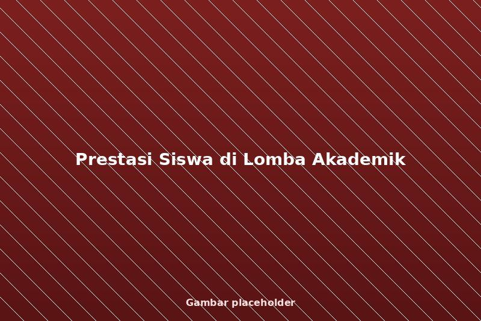

PrestasiPrestasi Siswa di Lomba Akademik
Siswa-siswi SDN Balas Klumprik kembali menorehkan prestasi membanggakan setelah meraih juara pada ajang lomba akademik tingkat kecamatan.
Prestasi ini merupakan hasil dari pembinaan intensif yang dilakukan sekolah melalui program pendampingan belajar tambahan bagi siswa berpotensi, bekerja sama dengan program mentoring talenta yang dikelola yayasan.
Kepala sekolah menyampaikan apresiasi kepada seluruh siswa, guru pembimbing, dan orang tua yang telah mendukung proses latihan, serta berharap capaian ini dapat memotivasi siswa lain untuk terus berprestasi.
← Kembali ke Berita